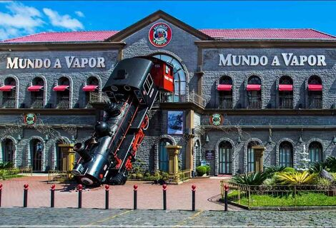

Tudo Sobre Gramado
Focada no turismo e com uma atmosfera única de aconchego, a cidade não nega suas origens. Construída em 1875, Gramado era lar de índios caingangues e, anos mais tarde, lar de imigrantes alemães, italianos e portugueses. Presença europeia que é evidente na arquitetura, gastronomia e hospitalidade.
Entretanto, a cidade só surgiu definitivamente como conhecemos em 1954, quando a região foi emancipada da cidade de Taquara – a cidade de Gramado é relativamente jovem, tem apenas 66 anos! O nome, muito peculiar, faz parte dessa história. Quando os imigrantes subiam a Serra, encontravam um campo de grama macia que usavam para repouso. Esse gramado seria então o responsável pelo nome da região.
Os pontos turísticos de Gramado
Em Gramado, estão alguns dos parques e atividades mais diversificadas do país. As atrações combinam tanto com uma viagem com crianças, quanto em amigos ou a dois. Confira abaixo os pontos turísticos que não podem ficar fora do roteiro.
Palácio dos Festivais

O Palácio dos Festivais sedia há 46 anos o Festival de Cinema de Gramado, incluindo a cidade no mapa cultural nacional e da América Latina. Fora da época do evento, é possível visitar o Museu do Festival, situado no prédio. Em exposição estão réplicas do Kikito, troféu da premiação, atividades de criação e direção de filmes, reprodução de curtas exclusivos e muito mais!
Mini Mundo
O Mini Mundo é um parque ao ar livre com réplicas idênticas de cidades do mundo todo. Além dos prédios, as obras são animadas com mini-habitantes! Tudo 24 vezes menor que o tamanho real. No local tem loja temática (os brinquedos importados são irresistíveis), espaço para alimentação e playground infantil.
Snowland
Snowland é o maior parque indoor de neve da América Latina. Ele oferece atrações com neve de verdade, como snowboard e pista de patinação no gelo.
Mundo a Vapor
Em uma exposição interativa, o museu Mundo a Vapor retrata a força das máquinas. Os visitantes podem acompanhar todos os tipos de produção (siderúrgica, termelétrica, hidrelétrica e mais), com maquetes e réplicas de indústrias reais.